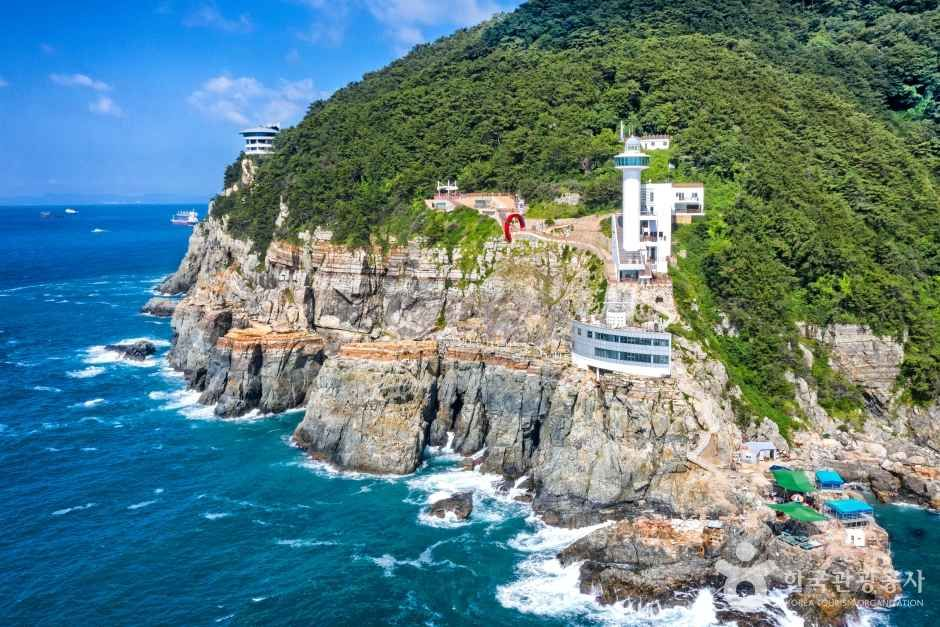
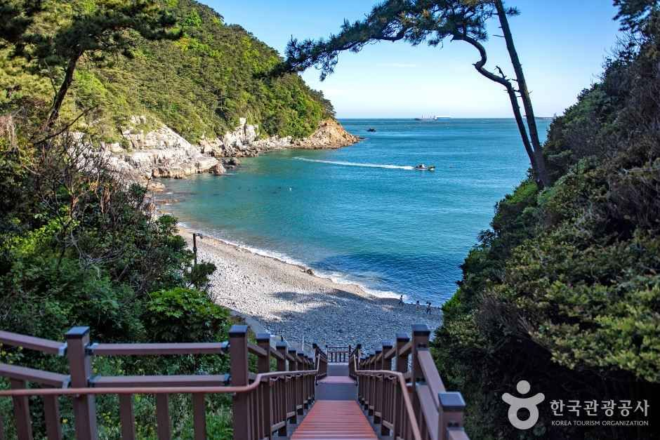
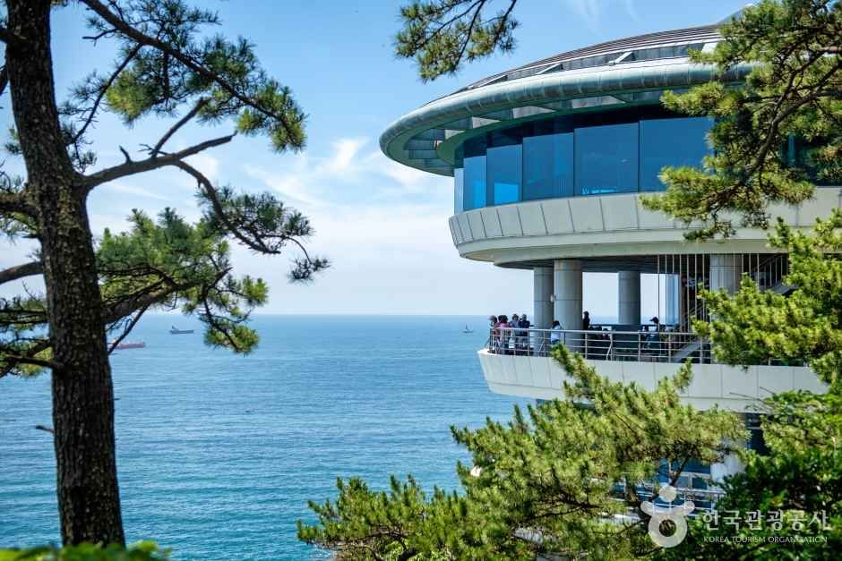
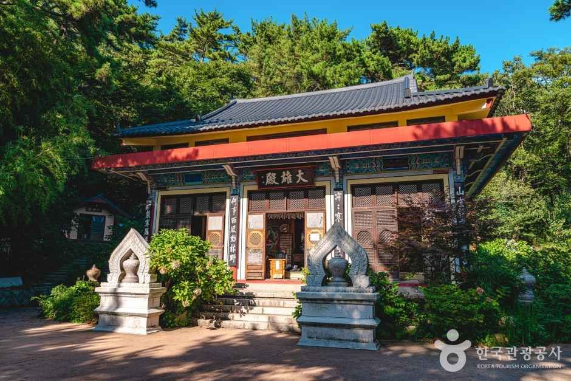
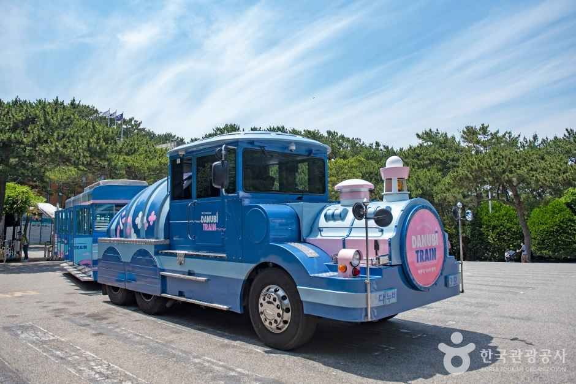

Taejongdae Busan Guide: Overview
This Taejongdae Busan guide covers one of the city's most famous coastal parks, at the southern tip of Yeongdo Island. Taejongdae is a 1.6 km² headland of black pine forest and sheer sea cliffs facing the Korea Strait, with a lighthouse, an observatory and a temple along one loop road. On a clear day you can see Japan's Tsushima, about 56 km away.
It is a national Scenic Site (Myeongseung No. 17) and part of Busan's national geopark, and Busan Tourism Organization says it has been picked seven times in a row for Korea's list of 100 must-visit tourist spots. This guide covers what to see, the 2026 shuttle bus that is replacing the Danubi train, opening hours and how to get there. We checked the details against Korea Tourism Organization (KTO) data, Busan Tourism Organization and the park's official site, run by Busan Infrastructure Corporation.
"Pine forest, white lighthouse and wave-cut cliffs on one easy loop. The best half-day of sea views within Busan's city limits."

Cliffs, Kings and a Former Fortress
The name comes from a story recorded in the 1740 Dongnae-bu-ji: King Taejong Muyeol of Silla is said to have come here to practise archery. Another legend links the flat rock below the lighthouse to a Joseon king's prayer for rain. The headland was a military fortress closed to the public from the Japanese colonial period until it became a resort park in 1967 and a tourist site in 1969.
Geologically, Taejongdae is layered lake sediment from the late Cretaceous, cut by the waves into sea cliffs, wave-cut platforms and sea caves. It became a Scenic Site on November 1, 2005, and was recognised as a national geopark on December 6, 2013. More than 120 tree species grow here around a 250 m summit.

What to See on the Loop
Taejongdae Observatory is the first big stop, with views over the open sea and the small island of Jujeondo (Saengdo) just offshore. A short walk on is Yeongdo Lighthouse, rebuilt in 2004 as a maritime culture space with a small natural history exhibit, gallery and viewing deck. Wooden stairs lead down to the rocky shore, the Sinseon Bawi ("Hermit Rock") platform and the flat rock that gave Taejongdae its name.
Back on the loop, Taejongsa Temple sits in the forest and is known for its early-summer hydrangeas. Near the end of the loop, stairs lead down to pebble beaches at Gamji and Taewon, where pleasure boats leave for cruises along the cliffs (check times on site).


2026 Shuttle Bus, Hours and Fees
Danubi train suspended. The road train that normally circles the park has been out of service for an emergency safety inspection since July 3, 2026, and no restart date has been announced. Its usual fare was 4,000 KRW for an adult loop, but don't plan around it until it is back.
Free shuttle bus. Busan Tourism Organization runs free buses on the same route, Wednesday to Sunday, 09:30–17:30. Pick up a free ticket for a set departure at the Danubi ticket office (09:10–17:30, first come, first served). The 3.8 km loop goes Danubi Plaza → Observatory (1.7 km) → Lighthouse (200 m) → Taejongsa (600 m) → Danubi Plaza (1.3 km), and you can hop off and on at each stop. There is no bus on Mondays and Tuesdays (holiday weeks may differ) or in rain and storms.

Visitor Information
| Item | Details |
|---|---|
| Address | 24 Jeonmang-ro, Yeongdo-gu, Busan (부산광역시 영도구 전망로 24) |
| Phone | Busan Tourism Organization (shuttle, parking) +82-51-405-8745; Busan Infrastructure Corporation (facilities) +82-51-860-7866 |
| Park hours | 04:00–24:00 (Mar–Oct); 05:00–24:00 (Nov–Feb); shore areas closed from about 20:00 |
| Entry | Free |
| Shuttle bus | Free; Wed–Sun 09:30–17:30; tickets 09:10–17:30 at the Danubi ticket office; no service Mon–Tue |
| Cars | Loop road open mainly to vehicles for people with limited mobility, 2,000 KRW per car; parking at the entrance |
| Bus | From Nampo-dong (opposite Lotte Department Store, Nampo Station exit 6): buses 8, 17, 30, 88, 186, about 30 min. From Busan Station (opposite Kyowon Building, exit 7): buses 17, 88, 101, about 40 min |
| Official info | bisco.or.kr/taejongdae (park site), bto.or.kr (shuttle bus), Visit Busan |
Sources: Korea Tourism Organization data for Taejongdae (태종대); Busan Tourism Organization's Taejongdae page and shuttle bus notice; the Busan Tourism Association notice of July 10, 2026; Busan Infrastructure Corporation's Taejongdae site (introduction, hours, directions, vehicle access). Photos © Korea Tourism Organization (KOGL Type 1, attribution), unmodified. No AI-generated images.
Getting There
The easiest way is by city bus from Nampo-dong: take Busan Metro Line 1 to Nampo Station, leave by exit 6 and catch bus 8, 17, 30, 88 or 186 from opposite Lotte Department Store to the Taejongdae stop, about 30 minutes. From Busan Station (exit 7), buses 17, 88 and 101 run from opposite the Kyowon Building to Taejongdae or the Taejongdae Oncheon terminus in about 40 minutes.
From Haeundae or Gwangalli, allow 70–85 minutes by bus with one change. From the bus stop it is a short walk uphill through the main gate to Danubi Plaza, where the shuttle bus starts.
Tips for Visiting
- Check the day: the free shuttle doesn't run on Mondays and Tuesdays. Walking the full 4.3 km loop is fine for most people, but it is hilly.
- Go early: shuttle tickets are first come, first served and can run out on weekends.
- Wear good shoes: the stairs down to the lighthouse and pebble beaches are long and steep.
- Watch the weather: buses stop in rain and storms, and the cliffs are no place to be in high winds. Stay behind railings on the rocks.
- Make a day of Yeongdo: combine Taejongdae with the Huinnyeoul coastal village, the National Maritime Museum and seafood in Nampo-dong or Jagalchi.
How It Compares with Other Busan Coastal Spots
| Taejongdae | Igidae Coastal Walk | Haedong Yonggungsa | |
|---|---|---|---|
| What it is | Forest headland with cliffs, lighthouse and temple | Cliffside walking trail | Seaside Buddhist temple |
| Best for | Sea cliffs and a full half-day outing | A longer coastal hike | A quick temple visit by the sea |
| Getting around | Free shuttle bus (Wed–Sun) or walk | On foot only | On foot; many steps |
| Area | Yeongdo-gu, near Nampo-dong | Nam-gu, near Gwangalli | Gijang-gun, near Haeundae |
| Time needed | About 3 hours | 2–3 hours | About 1 hour |
Who It Suits
- Great for: First-time Busan visitors who want dramatic coastline close to Nampo-dong.
- Great for: Families, since the shuttle bus (Wednesday to Sunday) cuts out most of the walking.
- Great for: Photographers chasing cliffs, the lighthouse and clear-day views to Tsushima.
- Less ideal: Visitors with limited mobility on Mondays and Tuesdays, when the shuttle doesn't run.
- Less ideal: Evening visits to the shore; coastal areas close from about 20:00.
Plan Your Busan Trip
Taejongdae FAQ
Where is Taejongdae?
Taejongdae (태종대) is a coastal park at the southern tip of Yeongdo Island in Busan, about 9.1 km along the coast from the bridges to the mainland. The address is 24 Jeonmang-ro, Yeongdo-gu, Busan. Buses from Nampo-dong take about 30 minutes.
Is Taejongdae free?
Yes. Entry to the park is free, and the free shuttle bus that is replacing the Danubi train is also free. Cars allowed on the loop road (mainly vehicles for people with limited mobility) pay 2,000 KRW per car.
Is the Danubi train running in 2026?
Not at the moment. Busan Tourism Organization says the Danubi train has been out of service for a safety inspection since July 3, 2026. A free shuttle bus runs the same loop instead, Wednesday to Sunday, 09:30–17:30; get a free ticket for a set departure at the Danubi ticket office (09:10–17:30, first come, first served). It does not run on Mondays and Tuesdays or in bad weather.
What are Taejongdae's opening hours?
The park is open 04:00–24:00 from March to October and 05:00–24:00 from November to February. Coastal spots such as the pebble beach below Yeongdo Lighthouse are closed to the public from about 20:00 for military operations, so visit the shore in daylight.
How long do I need at Taejongdae?
Allow about three hours. The loop road is 4.3 km, and the stairs down to the lighthouse and the shore add time. With the shuttle bus you can hop off at the observatory, the lighthouse and Taejongsa Temple and catch a later bus.